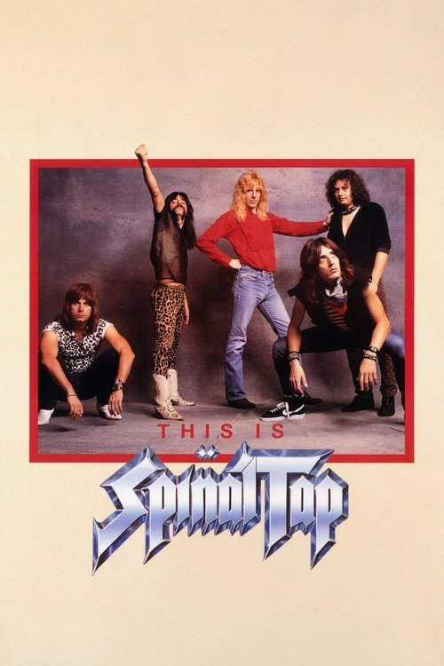

This Is Spinal Tap (1984)
Sinopsis Rápida
¿Qué pasaría si el exceso, la arrogancia y el ridículo se apoderaran de una banda de heavy metal? Descubre la hilarante y legendaria historia de Spinal Tap.
Sinopsis Detallada
This Is Spinal Tap es un falso documental que sigue la tormentosa gira de la banda de heavy metal Spinal Tap. Desde sus extravagantes demandas hasta sus desastrosos conciertos, la película es una sátira brillante y desternillante del mundo del rock, que ridiculiza los excesos y la megalomanía del género. Con un humor inteligente y observaciones agudas, la película se ha convertido en un clásico de culto. La parodia va más allá de la música, explorando las relaciones interpersonales de los miembros de la banda y los absurdos del éxito. Un must-see para cualquier amante del rock o del buen humor.
¿Por qué tenés que verla?
- Humor inteligente e ingenioso que trasciende generaciones.
- Actuaciones icónicas y memorables, especialmente la de Christopher Guest.
- Impacto cultural significativo: influenció numerosas comedias y series sobre música.
- Parodia perfecta de la cultura del rock y sus excesos.
Idea Extra
Análisis de las referencias musicales y cinematográficas en This Is Spinal Tap, comparándolas con su contexto histórico.